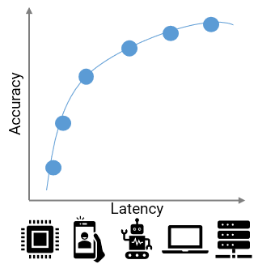
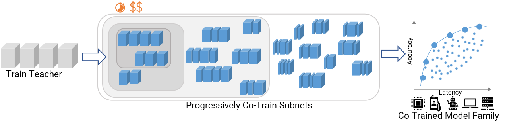
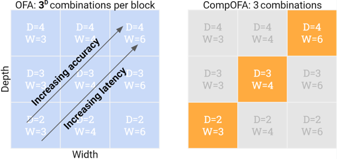

Introduction
If you’ve trained deep learning models, you know the process can take hours or days (weeks?) and thousands of dollars’ worth of computation. With increasing use of DNNs in common production, this problem only gets bigger – they need to be used on diverse deployment targets with widely varying latency constraints, based on hardware capabilities and application requirements. Designing DNN architectures that maximize accuracy under these constraints adds another degree of complexity requiring manual expertise and/or neural architecture search (NAS) – which are even slower and costlier than training. Clearly, repeating these processes for every deployment target is not scalable and therefore, solving this problem is essential for making DNNs easier to use in real deployment.

In CompOFA, we propose a cost-effective and faster technique to build model families that support multiple deployment platforms. Using insights from model design and system deployment, we build upon the current best methods that take 40-50 GPU days of computation and make their training and searching processes faster by 2x and 200x, respectively – all while building a family of equally efficient and diverse models!
How it’s done today
The prevailing norm today is to build individual neural networks. We design and train single monolithic DNNs with a fixed accuracy and latency measure (or computational complexity, energy usage, etc.). Both, designing efficient architectures and training on production-grade datasets, require computation worth several GPU hours with slow turnaround, expensive hardwares and expertise in ML and Systems. In 2019, a study estimated the carbon emissions of one well-known NAS technique to be 283 metric tons – or nearly 60 times the emissions over an average human lifetime! Thus it is simply unscalable to continue this trend of designing and training individual DNNs for deployment.

Once-For-All (OFA) proposed to address this problem via weight-shared sub-networks of a larger network. These sub-networks of varying sizes had diverse accuracy and latency measures and could be trained simultaneously (rather than one-by-one). Post this one-time training, one can independently search and extract a subnetwork with optimal accuracy for a given deployment. Hence, OFA significantly improved the scalability over the naïve method. But, at 40-50 GPU days of train time, OFA remained expensive and required special training & searching procedures for its huge search space of models.
In CompOFA, we find insights that speed up OFA’s training and searching methodologies, while making it easier to use.
CompOFA
OFA built a model search space by slicing smaller subnetworks from a larger network – by choosing subsets of its layers (depth), channels (width), resolution, etc. This choice was made independently at each layer, contributing to a combinatorial explosion of models! These models don’t come free – training so many of them together needs a slow, phased approach. After training, the search also requires building special accuracy and latency estimators.
But do we need such a large search space?
Are all these models efficient? No! Many of these subnetworks are of dimensions that are suboptimal, lying well below the optimal accuracy-latency tradeoff.
Are all these models different enough? No! Imagine networks where the smallest and largest differ in latency by just 100ms – this fine granularity is too small to matter for real hardware.
In CompOFA, we question whether we can identify and focus our attention just on models that are close to optimal, and at a sufficient granularity? After all, it’s not common practice to treat these model dimensions as independent or random –- we often combine dimensions like depth and width to vary together i.e. in a compound fashion. This common intuition is backed by empirical studies like EfficientNet and RegNet, which showed that there are optimal relations between these dimensions.

Inspired by this, CompOFA uses a simple but powerful heuristic – choose models that grow depth and width together. This makes our search space much more tractable, but still just as efficient and diverse for actual use.
In our paper, we show that we can train this model family in half the time and all at once, without a slow phased approach. After training, we can search for models 216x faster, and without the time and effort to build special estimators.
| Metric | OFA | CompOFA | Savings |
|---|---|---|---|
| Train Time (GPU hrs) | 978.3 | 493.5 | 2x |
| Train Cost (USD) | $2.4k | $1.2k | 2x |
| CO2 emissions (lbs) | 277 | 128 | 2x |
| Search Time | 4.5 hours | 75 seconds | 216x |
Despite these savings, CompOFA does not compromise on its original goal. It’s able to extract networks for multiple latency targets on distinct hardware types, and match the existing SOTA in both optimality and range of its models.

Learn more
CompOFA improves the speed, cost, and usability of jointly training models for many deployment targets. By highlighting insights on model design and system deployment, we try to address an important problem for real-world usability of DNNs.
To know more, please check out our paper and poster at ICLR 2021! Our code and pretrained models are also available on our Github repository.
{kind=link}
Citation
@inproceedings{compofa-iclr21,
author = {Manas Sahni and Shreya Varshini and Alind Khare and
Alexey Tumanov},
title = {{C}omp{OFA}: Compound Once-For-All Networks for Faster Multi-Platform Deployment},
month = {May},
booktitle = {Proc. of the 9th International Conference on Learning Representations},
series = {ICLR '21},
year = {2021},
url = {https://openreview.net/forum?id=IgIk8RRT-Z}
}